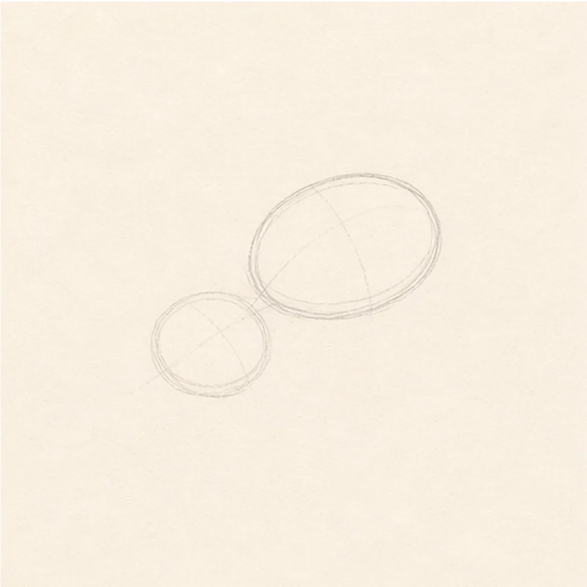
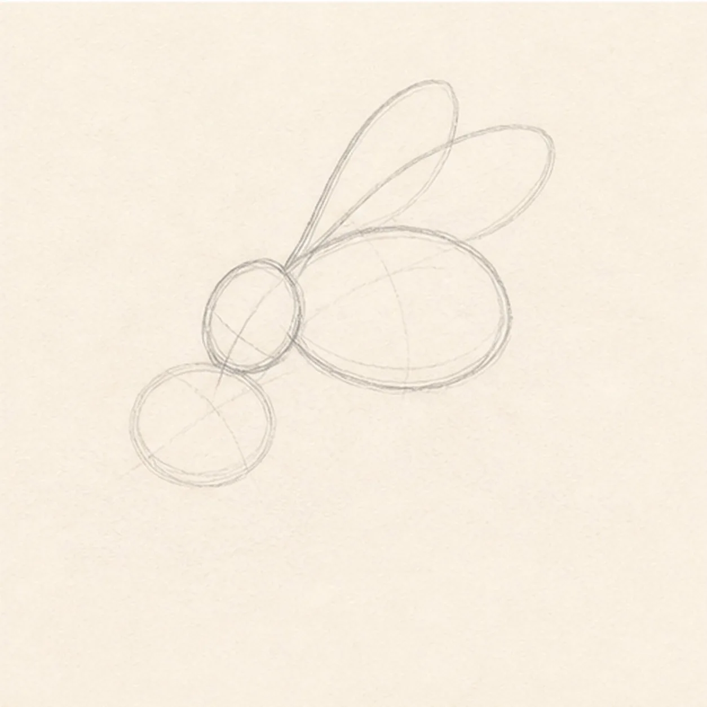
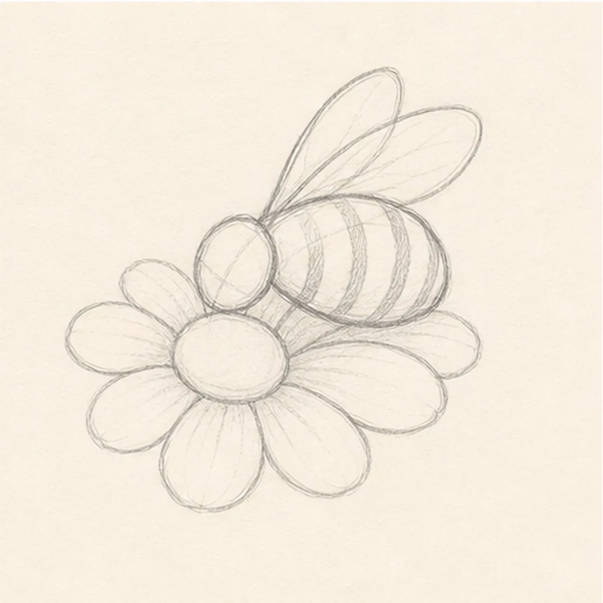
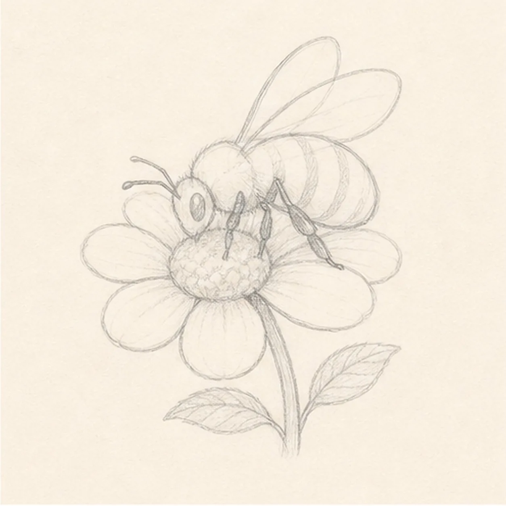
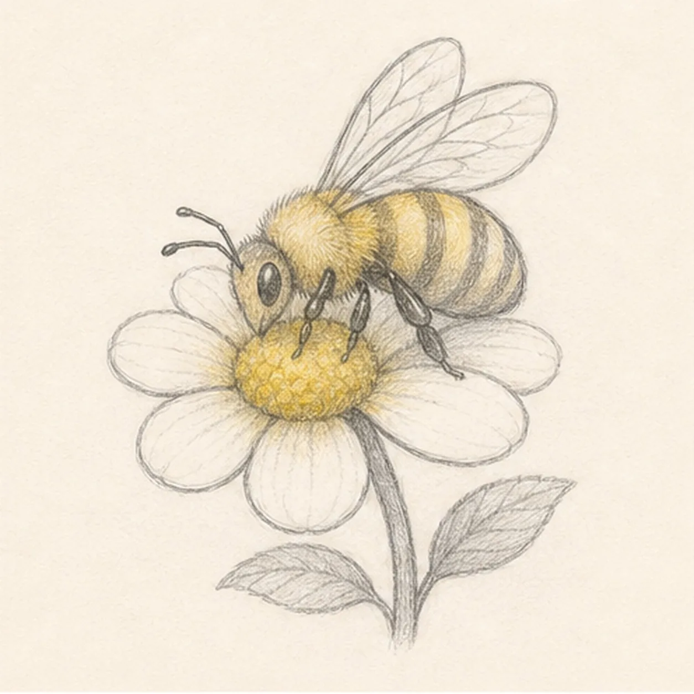

From the archive
Let's draw a honeybee on a flower
Treat this as one small practice round: build the subject lightly, notice the shapes, then darken only the lines that help the finished sketch.
-
01

Place bee and flower guides
Draw a small oval for the bee body and a round flower center below it, letting the two guides touch lightly.
Sketch tip: Keep these guides loose. The bee will tilt across the flower, so the body does not need to sit perfectly flat.
-
02

Add head and wings
Attach a small head circle to the front of the bee, then draw two long wing shapes above the body.
Sketch tip: Let the wings overlap the body a bit. Transparent-looking wings feel lighter when they are drawn with pale lines.
-
03

Shape petals and stripes
Add rounded petals around the flower center and curve several stripe bands across the bee's body.
Sketch tip: Curve the stripes around the oval instead of drawing straight bars. That gives the tiny body volume.
-
04

Add legs, antennae, and stem
Sketch tiny antennae, small bent legs touching the flower, a short stem, and two simple leaves.
Sketch tip: Use fewer leg lines than you think you need. Clear placement beats a tangle of tiny marks.
-
05

Texture the wings and petals
Add light wing veins, petal contour lines, soft graphite shading, and a gentle yellow tint on the bee and flower center.
Sketch tip: Keep the yellow restrained so the graphite drawing still does most of the work.
-
06

Finish the garden sketch
Darken the keeper contours, clarify the bee stripes and wing veins, and deepen the yellow and graphite shading that is already in place.
Sketch tip: Leave the flower petals mostly pale, but do not worry if your petal count or curve is different. That variation is part of making the sketch yours.